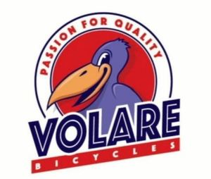

Trade Mark Journal No.2025/011 14 March 2025
WO0000001827798 (6,9,11,12,21,25,35,39)
Office of origin: Benelux Office for Intellectual Property (BOIP)
Date of International Registration:15 October 2024
Date of designation in the UK:
15 October 2024

The mark contains the colours purple, red and yellow.
International priority date claimed: 8 May 2024
(Benelux Office for Intellectual Property (BOIP))
(1503773)
- Class 6
- Locks and keys, of metal; bicycle locks, including cable locks, chain locks, u-locks, frame locks and padlocks; metal bicycle storage racks; parts for the aforementioned goods, as far as included in this class.
- Class 9
- Bicycle helmets and motorcycle helmets; ski helmets; skate helmets; safety helmets for use in sports such as skating, equestrian sports, water sports, kayaking, mountain climbing, lacrosse, american football; eye protectors, including cycling glasses; rechargeable batteries, rechargeable bicycle batteries, rechargeable batteries for vehicles; connectors and cables for connecting batteries; portable battery chargers, wall connectors (wall chargers); safety, security, protection and signalling devices; bicycle speedometers; reflective clothing for the prevention of accidents; locks (electric) for bicycles; bicycle computers; holders for mobile phones, tablets and bicycle computers; parts for the aforementioned goods insofar as included in this class.
- Class 11
- Lighting equipment for bicycles and electric bicycles, including the following products: vehicle headlights, tail lights, turn signals, warning lights, battery-powered lights, LED lamps and incandescent lamps; bicycle lights; reflectors for bicycles and electric bicycles; parts of the aforementioned goods, insofar as included in this class.
- Class 12
- Means of transport, means of transport by land or by water including, but not limited to, bicycles, steps, tricycles, scooters, go-karts, bicycles, motorcycles; vehicles; means of transportation by land or by water; self-loading vehicles; electric vehicles; electric bicycles; push scooters [vehicles]; electric motorcycles; bicycles; electric scooters; wheels and tires for bicycles; anti-theft, safety and security devices and equipment for vehicles, in particular bicycles; accessories for the aforementioned goods, namely bicycle bells, bicycle horns, electric or non-electric, bicycle repair kits, bicycle tire pumps; parts and accessories of these goods including, but not limited to, bicycle baskets, bicycle bags, luggage carriers, bicycle bells, bicycle horns (electric or not), outer tires, inner tubes, headset fittings, brakes, parts that fit into the recess in the frame in which the bottom bracket fits, so-called "bracket parts", duo seats, frames, handles, coat protectors, chains, chain wheels with connecting pieces to which the pedals are attached, so-called "cranks", chain guards, crown pieces, lantern hooks, cams, hubs, gear hubs, brake hubs; pedals and pedal rubbers, bicycle tire pumps, bicycle stands, mudguards, handlebars, rims, spokes, forks [bicycle parts], freewheels, seat posts, bicycle saddles; water bottle holders, mobile phone holders for vehicles, repair kits for bicycles, spoke decorations for bicycle wheels, parts and components for the aforesaid goods included in this class, namely child seats for bicycles; bicycle carriers.
- Class 21
- Water bottles, bidons; brushes, sponges and cleaning cloths; brushes and sponges for cleaning bicycles and bicycle parts; brushes and sponges for cleaning vehicles and their parts; cleaning articles; cooking utensils, non-electric; broom and brush goods (except brushes).
- Class 25
- Clothing, headgear, footwear; cycling and sports clothing, including shirts, cycling jackets, cycling shorts and long trousers, cycling shorts with and without chamois, underwear, thermal underwear, socks, arm and leg pieces; gloves, cycling shoes, hats, helmet liners [headwear], balaclavas, scarves and headgear for sports, with the exception of safety helmets; rainwear; sportswear; bathing suits; sports shoes; headbands [clothing]; belt (straps).
- Class 35
- Commercial intermediation services; purchasing services; wholesale and retail services connected with the sale of locks and keys, of metal; bicycle locks, including cable locks, chain locks, U-locks, frame locks and padlocks; metal bicycle storage racks; parts for the aforementioned goods; bicycle helmets and motorcycle helmets; ski helmets; skate helmets; safety helmets for use in sports such as skating, equestrian sports, water sports, kayaking, mountain climbing, lacrosse, American football; eye protectors, including cycling glasses; rechargeable ba8eries, rechargeable bicycle batteries, rechargeable batteries for vehicles; connectors and cables for connecting batteries; portable battery chargers, wall connectors (wall chargers); safety, security, protection and signalling devices; bicycle speedometers; reflective clothing for the prevention of accidents; locks (electric) for bicycles; bicycle computers; holders for mobile phones, tablets and bicycle computers; parts for the aforementioned goods; lighting equipment for bicycles and electric bicycles, including the following products: vehicle headlights, tail lights, turn signals, warning lights, battery powered lights, LED lamps and incandescent lamps; bicycle lights; reflectors for bicycles and electric bicycles; parts of the aforementioned goods; means of transport, means of transport by land or by water including, but not limited to, bicycles, steps, tricycles, scooters, go-karts, bicycles, motorcycles; vehicles; means of transportation by land or by water; self-loading vehicles; electric vehicles; electric bicycles; push scooters [vehicles]; electric motor cycles; bicycles; electric scooters; wheels and tires for bicycles; anti-theft, safety and security devices and equipment for vehicles, in particular bicycles; accessories for the aforementioned goods, namely bicycle bells, bicycle horns, electric or non-electric, bicycle repair kits, bicycle tire pumps; parts and accessories of these goods including, but not limited to, bicycle baskets, bicycle bags, luggage carriers, bicycle bells, bicycle horns (electric or not), outer tires, inner tubes, headset fittings, brakes, parts that fit into the recess in the frame in which the bottom bracket fits, so-called "bracket parts", duo seats, frames, handles, coat protectors, chains, chain wheels with connecting pieces to which the pedals are attached, so-called "cranks", chain guards, crown pieces, lantern hooks, cams, hubs, gear hubs, brake hubs; pedals and pedal rubbers, bicycle tire pumps, bicycle stands, mudguards, handlebars, rims, spokes, forks [bicycle parts], freewheels, seat posts, saddles; water bottle holders, mobile phone holders for vehicles, repair kits for bicycles, spoke decorations for bicycle wheels, parts and components for the aforesaid goods included in this class, namely child seats for bicycles; bicycle carriers; water bottles, bidons; brushes sponges and cleaning cloths; brushes and sponges for cleaning bicycles and bicycle parts; brushes and sponges for cleaning vehicles and their parts; cleaning articles; cooking utensils, non-electric; broom and brush goods (except brushes); clothing, headgear, footwear; cycling and sports clothing, including shirts, cycling jackets, cycling shorts and long trousers, cycling shorts with and without chamois, underwear, thermal underwear, socks, arm and leg pieces; gloves, cycling shoes, hats, helmets, balaclavas, scarves and headgear for sports, with the exception of safety helmets; rainwear; sportswear; bathing suits; sports shoes; headbands [clothing]; belts (straps) and to hand-operated cleaning equipment, in particular pressure cleaners, brooms and brushes (except paintbrushes), cleaning materials, hand-operated sprayers, products for cleaning and maintaining bicycles and bicycle parts, namely degreasers, soaps, oils and greases, moisture and dirt-repellent products, chain cleaners, cleaning cloths, bicycle maintenance kits; import-export agency services; online ordering services; provision of commercial information; promotional services; organisation of events for commercial and advertising purposes; consultancy and information regarding the aforesaid services; the aforementioned services also provided via electronic networks, such as the internet.
- Class 39
- Renting, leasing and making available bicycles, including electric bicycles, batteries and chargers.
Boelsz International Holding BV
Representative: Lincoln IP, 4 Rubislaw Place Aberdeen AB10 1XN UNITED KINGDOM